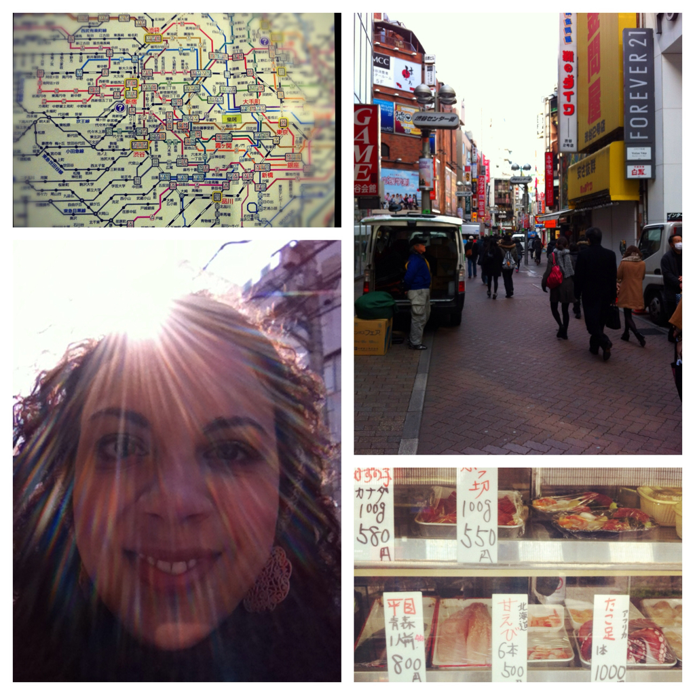

Tokyo
Houston, we have arrived!
Is that even a famous movie line? Anyway, I've used it now, haven't I? Haven't I.
Where it's 4.30a at home, it's only a mere 9.30p on this side of the... the water? Is only the Atlantic "The Pond"? I think I'll look into that sometime... But who am I kidding? I'll completely forget. Needless to say, I have arrived here safely and soundly. After an on time arrival and an uneventful immigration passing, I made it to the outer Tokyo train lines in one piece.
What. A. Nightmare. First of all, did anyone else know they don't speak English here?! I mean where are my words below your words?!
I'll tell you where, nowhere. The only saving grace (and I truly mean saving grace, Touched By An Angel style) was little, 50-something-year-old Mei who spotted me as we were leaving customs. She asked if I knew where I was going and, as I looked around at the lack of a familiar typeface, I pitifully responded with a whispered, "no", a shoulder shrug, and something akin to a distorted pout.
Mei, it so happens, is from Berkeley and she now lives right in this here city of Tokyo. Mei changed my money with her own cash and took me from Narita directly to my stop in Shibuya (shiBOOya). Homegirl dragged us, luggage and all, to multiple connections and train lines and it left me mortified at the idea that I was to do the whole process alone had she not come to Mighty Mouse me.
It took me three hours to get to my hotel. And Mei hit many superlatives for me on our devastatingly long journey that I thought would never end. Mei has to be the cheapest talker I have ever met. Not only did she talk my head off for two full hours, she filled the time-space lapse between her lips and my ears with tips on how to save money EVERYwhere. I estimate that Mei spends an extra three hours every journey trying to save between 30 cents and $20. Thankfully, I now truly believe I have the resources to do the same. If Mei left me with nothing else, she left me aware of how to save $5 at the Kyoto station and gain two hours at the Kyoto station. We bid adieu and that was that for generous, kind, and chatty Mei.
After a patience-testing experience including multiple street corners that ALL resemble Times Square, my suitcase going up (and down) four sets of at least 20 stairs, and three wrong turns, I got here... to the Shibuya Granbell Hotel. It is perfect. Thank you, Lauren (who you'll get to meet in Sydney!), for recommending this place. It's wonderful, all six by eight room feet of it. I can hardly fit between desk and bed but this place has a heated toilet and I love my heated toilets! So posh. I may sleep on it tonight...
Bowing, not just for locals anymore.
Oooooh, Tokyo. What a city you are. First off, I'm not sure I've mentioned it but there is a language barrier here. And, as Posh Spice would say, it's major. Continuously I find myself running into commuters due to my habitual walking on the right side of the street (I mean why would left ever be right!?) and I'm positive the times I almost fell down stairs today numbered at least five... but it could also be my imagining that I would plummet face first, arms madly adrift in the air, onto the cement and happen to be in dire need of assistance and no one would be able to help due to the, hello!, language barrier. Oh my.
This is to say nothing about the people. They are just lovely. They are accommodating, sweet natured, hospitable, and kind... especially if you're in their establishment. Out on the streets, however, it's every man to himself. Most of the time it's like I'm nonexistent (except for that whole walking into them thing) which is fine by me since I have nothing to say to them. In fact, there's nothing I COULD say to them. When interaction does actually occur, there is so much bowing I'm not really ever sure what's happening. "Yes, arigatou!" (bow) "Arigatou." (smile) (bow) (nod) (bow) "Arigatou." (bow and smile) "Arigatou!" (bow) (bow) "Arigatou!" (bow) - I'm not even sure which character is me in that exchange...
It took me a whole four hours but I've embraced finally using the Japanese word for "thank you" as I feel its the least I can do. After all, I'm in their country. The bowing I'm trying to get a handle on because, though it's a sweet gesture, I just feel like a fool. I'm sure I look it, too. When I leave, no doubt talk involves my horrible Japanese accent put on (true story) for my one Japanese word. And they then probably launch into what we're all thinking here: "What was with all the bowing!?"
Needless to say, I've been out and about today; it was beautifully brisk, not unlike San Francisco in June. I was slightly surprised that in the glaring sun, all of the people I came in contact with opted out of the sunglasses option. I cannot imagine why. Maybe I'm an extreme squinter but I have no pride...
I spent the morning ducking into alleyways and shops more to ditch the cold than see the wares. Mostly because stores included (but were not limited to): Claire's (I almost went in here because I DID leave my 10-pack of scrunchies at home), Forever 21, Outback Steakhouse, and Tower Records. The good news is that Tower is still alive and thriving here (?!)...
After a quick afternoon nap, I headed out to dinner at Lauren's favorite ramen spot right around the corner from the hotel in Shibuya and then went for an evening tea at A to Z Cafe in Aoyama. The Spiral is a small gallery and cafe that I popped into to check out their pieces on display prior to heading up to tea. The walk there and back was both stimulating and refreshing and it was great to be outside getting a more complete view of this dynamic city. Tomorrow should be a beautiful day filled with Japanese history... Exciting!
Temples and train stops and beers, oh my!
Apologies on the reporting front (mainly to Debs since she is my biggest fan! And probably the one most interested in my safety... Love you, Mom!). Last night I had to get to bed what with all of my daytime wanderings and so I missed out on my evening post. No worries, we are alive and well this early morning and are getting ready for another full day.
The good news is that, after a day, I really do feel like I have the train system down. Only once in a while do I pull out the Top 10 Tokyo (T10T, don't leave home without it!) to check my whereabouts. This is great because it seems that my excellent sense of direction fails me about 82% of the time. With that in mind, while on foot, I spent about a fourth of the day backtracking, finding some adorable back-alley haunts that were reminiscent of The Secret Garden meets "keep out". So inviting! This place is great.
I stopped in front of the Senso-ji Temple to see what all the commotion was about but moved on as I was sure my map didn't say that the sight was "this close to the subway?!" It was. Anyway, I came back around the back way and had myself a couple hours tour of the area...
This place was glorious. About 45 minutes from Shibuya, the temple is deemed one of the liveliest spots in the city (and the 100 Times Squares aren't?!) with stalls along the path to the main hall littered with souvi shops, food carts, an incense burner, and gardens. A processional including monks, beautiful robes, poles, and rice throwing occurred while I was there and it was nothing if not completely confusing. But interesting indeed! Those robes!
After sufficient picture taking, it was time to move forward to the Imperial Palace... But not before a snack! Hello Sando, an Aussie graphic design blogger in Japan, recommended a stop in any combini (convenience store like 7-11) to grab an onigiri (filled rice triangle) for an afternoon pick-me-up. I have loved her off the beaten path recs. Oishii! I quickly devoured the tuna and mayo wrapped in seaweed and hit the rails again. That will not be the last time I get down with an onigiri, to be sure. Much to my chagrin, however, the Imperial Palace is closed on Fridays (doh!) and so, as I was lacking in afternoon energy anyway due to the life suck that is jet lag, I headed back the the SGH.
After a rest, I headed out again to what was, by far, my best experience here in Tokyo. Lauren told me that if I went only to one place, it had to be the Golden Gai. Boy was she right. Taking up only a few lines of the T10T, the Golden Gai is a three "block" area for locals that houses door after door of hidden bars, seating only three to six people each. Dim lanterns lit alleys barely fitting two people across with doors coming up to your chest. Everything was closed and you would never know anything was happening inside these aisles were it not for the rumble of distant laugher and wafting sounds of Louis Armstrong. It's magic.
I stood outside the one establishment that I could see into... with four stools out of six available. After a quick pep talk including hype-ups like: "You'll never see them again if they kick you out!" and "You only live once!" I was ready to go. I slowly opened the door, popped my head in, and then stared at the bartender (score one for the ladies!). She stared back. Knowing this was getting us both nowhere, I asked (in English... Score one for the Americans!) if I could sit. Warmly she welcomed me and offered me a beverage. I ordered a Kirin and let her know (via the T10T language tips page) that it was truly oishii and that made her beam. Though I feel so embarrassed when I try other languages, it is an immediate icebreaker (everywhere but silly France) and we had a broken conversation for the next half hour. Even the two stoic men that were there warmed up to me and gave me some smiles on my way out. The scene was only ripened by the fact that blues and jazz were bouncing lightly off the old, wooden walls. Adventure success!
Lifted by the high of an event that I may only get one opportunity to enjoy, I headed over to the Mori Art Museum in Roppongi Hills to check out the 53-floor City View. Like whoa. Not to be missed. Not only was the contemporary Japanese art amazing (if you know me, you know I love the museums!) but the view of all of Tokyo on such a clear night was breathtaking. The Tokyo Tower, a marvel replicating the one done by Eiffel, was illuminated against a black backdrop of sky and surrounded by a sea of Tokyo's life below it. After a sit, I figured this was as good a time as any to close the day. I had seen old and new and had a hit a wall with how tired I was. Thankfully Shibuya was only a few stops away...
Say Goodbye to [Tokyo]
It seems to me that the duration of time you plan to stay in a place directly relates to when you are ready to go. I feel that if I were scheduled to depart Tokyo next week sometime, I'd be elated with all of the trouble I could find for myself: Actually karaoke with the locals? Yes, please! Tea with the emperor? Don't mind if I do. Picnic in Ueno and Koishikawa Korakuen Gardens? I'm saying why not?! Learn why there is so much bowing going on? I couldn't imagine a better afternoon. The idea of leaving today, however, gives me such a giddy feeling. Though I was sad to leave the SGH and all of the sights I left unseen, I feel like I'm actually spring boarding into the next phase of my adventure. I've walked enough in these boots, searched enough hidden alleys, and ridden enough of these rails. I'm ready to go because it's time to go but I have much left uncovered for when I return. This city is enchanting, I know I'll be back...
Before I completely checked out, though, there were some final stops I wanted to get in. I didn't rush because technically I didn't have anywhere to be. For those who know me, you are aware of my being severely scheduled and planned. Friend dates are pushed two weeks out due to club activities, work events, meetings with some ad hoc group I've joined, and my getting together with this one person I went to elementary school with. Today, though difficult and slightly confusing, was quite freeing. I kept wondering when I had to be somewhere else, realizing no one expected me anywhere any time soon.
After grabbing a quick breakfast at the hotel restaurant I headed over to Hama Rikyu Garden in Ginza. Still in winter's grip, the landscape was stripped and beautiful, offering quite the dichotomy of old and new world with the current city surrounding it. The tea house in its central pond was a serene tribute to Japanese tradition and got me excited for my next stop of Kyoto.
While on my way back to the subway I meandered into the Tsukiji Fish Market. What a scene! What a blast! What a blasted scene! They're in there selling knives (I felt these were probably really great knives), used (used!) galoshes I totally wanted to buy, knick knacks, and fish. They had the fish everywhere. After all, it was the fish market. Sushi items at each stall (perfect for that sushi rolling party I've been meaning to throw), ceramic this and that, and gorge chopsticks (that would also come in handy for said party; how high class). It even had fresh sushi lunch spots that had lines rivaling Outerlands on a Sunday morning. I wanted to stop but had to run to check out... I guess I did have ONE place I needed to be.
After that business was taken care of, I got my New York trot on and marched myself to lunch in Shibuya at Cent Trente-Neuf on recommendation from Hello Sando. It took me some determined searching on Thursday to find but was the perfect spot for today's late rest stop. I lingered over a glass of wine for about an hour, relishing every quiet moment with my book and some more blues rockin' in the background.
My last stop of the day was the Meiji Shrine in Harajuku and it takes about ten minutes to arrive at its gates from the main road. Ten minutes of the sound of gravel underneath soft steps, permanent lanterns preparing to light the way come dusk, and an evergreen shrouded pathway of over 120,000 trees leads the visitor to a courtyard and then to the shrine, crowded by the faithful.
After a few minutes of taking in the scene, I headed out through the thicket to scope the scene down at Harajuku. I caught glimpse of two twins dressed like babies with matching pink hair but of course I was too stunned to sneak a photo. I did grab one a few minutes later in the subway of another gal with exceptional matching abilities. Proud of her!
Once back at the SGH, I grabbed my things and headed down to the station. It was about time to catch a train outta town and into a softer side of Japan. I'm super looking forward to it!
Now I'm sitting on this train next to the most beautiful Japanese man that I have seen yet (and there are a whole bunch here). It's possible he's 22 but no one is asking questions. Or talking. Because we don't speak... Well, you know.